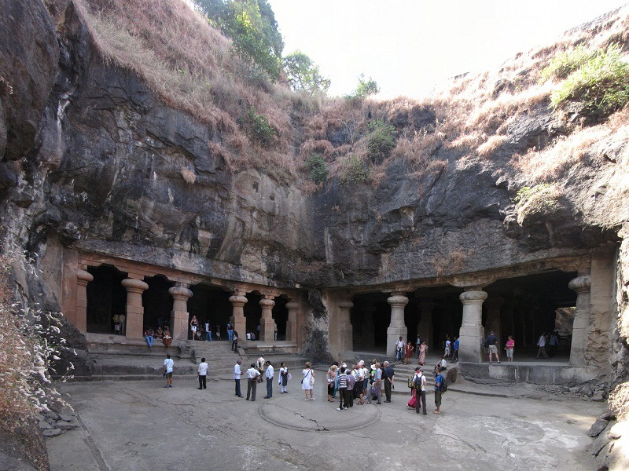
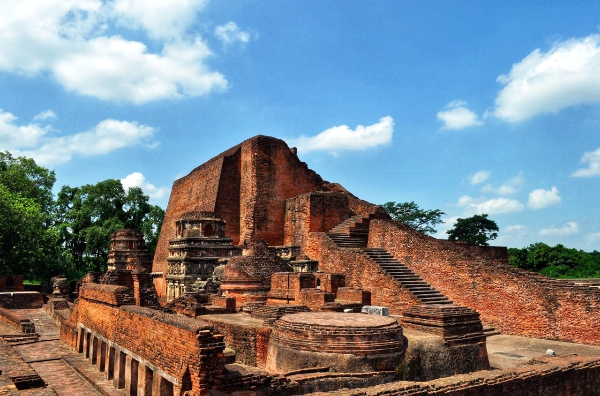
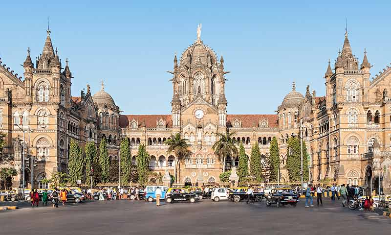
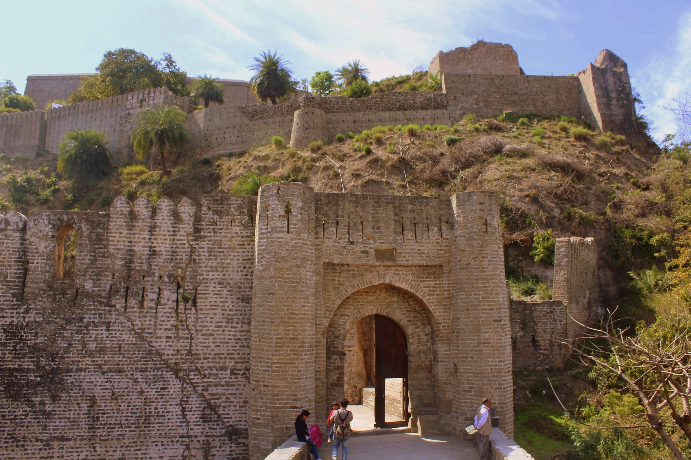
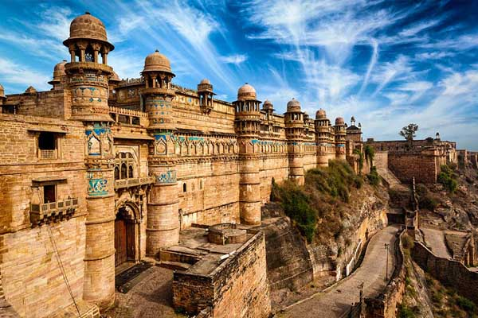
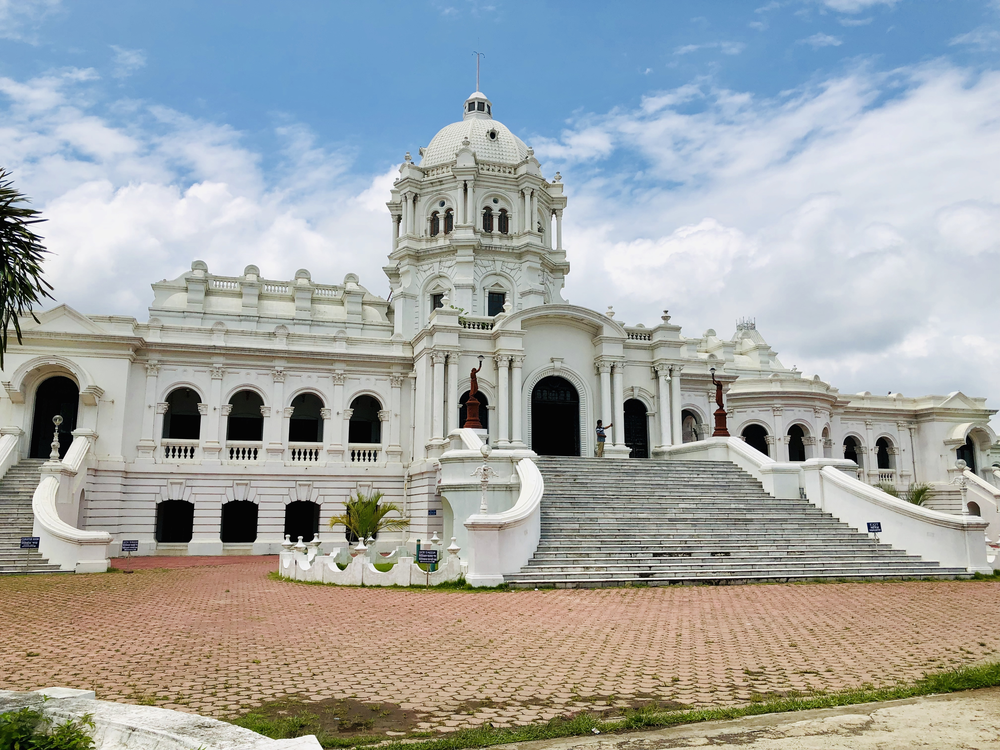

The rich heritage of India, one of the world’s oldest civilizations, is an all-embracing confluence of religions, traditions and customs. The highlights of Indian heritage lie in the treasure of its art, architecture, classical dance, music, flora and fauna, and the innate secular philosophy of its people. A visit to the heritage sites is like a walk through history, changing lanes with every dynasty that ruled Indian soils. The finesse of Indian handiwork, the richness of silk and cotton textiles, the ethnicity of jewellery, everything has come down as a heritage from ancient times and is being kept alive generation after generation. Even food in India is a legacy and part of Indian heritage, differing in look and taste in every state of India.
 |
Taj MahalThe Taj Mahal a marvel on marble was built by the Mughal Emperor Shah Jahan in commemoration of his favourite wife, Empress Mumtaz Mahal. Shah Jahan married Arjumand Bano Begum (Mumtaz Mahal), grand daughter of Itimad-Ud-Daula, the Wazir (Prime Minister) of Emperor Jahangir in 1612 AD. Mumtaz Mahal died in 1631 A.D. at the birth of her 14th child. The grief stricken emperor made all efforts in building the tomb in her memory, which is universally acknowledged as one of the most beautiful creations on earth. Artisans were requisitioned from all over the empire including Central Asia and Iran. While bricks for the internal framework were locally made. White marble for external surfaces was brought from Makrana, Rajasthan. The inscription on the northern facade records 1057A.H. (1647A.D.) as the date of its completion in 17 years . It is believed that Ustad Ahmad Lahori was the chief of the project while Ustad Isa Afandi prepared the site plan of the Taj Mahal. Amanat Ali Khan Shirazi is known for his calligraphic work and Ran Mal was the garden designer from Kashmir. The plan of Taj Mahal display strict bilateral symmetry. The central point is the tomb (rauza) and its four minarets, flanked by a mosque and assembly hall (Mehman Khana) The Taj is exactly as wide as it is high (55mtrs). A highlight of the monument is the exquisitely carved pietra dura inlaid with semi precious stones. The colour of the translucent marble keeps changing from dawn to midnight giving it a magical aura in keeping with Shah Jahan’s vision that the tomb and garden should represent paradise on earth. It is a unique man made manifestation of the glorious Mughal age and a wonder of the world. After his death in 1666 A.D., Shah Jahan was also buried beside his beloved wife in the Taj Mahal. |
Red FortThe Red Fort Complex was built as the palace fort of Shahjahanabad – the new capital of the fifth Mughal Emperor of India, Shah Jahan. Named for its massive enclosing walls of red sandstone, it is adjacent to an older fort, the Salimgarh, built by Islam Shah Suri in 1546, with which it forms the Red Fort Complex. The private apartments consist of a row of pavilions connected by a continuous water channel, known as the Nahr-i-Behisht (Stream of Paradise). The Red Fort is considered to represent the zenith of Mughal creativity which, under the Shah Jahan, was brought to a new level of refinement. The planning of the palace is based on Islamic prototypes, but each pavilion reveals architectural elements typical of Mughal building, reflecting a fusion of Persian, Timurid and Hindu traditions The Red Fort’s innovative planning and architectural style, including the garden design, strongly influenced later buildings and gardens in Rajasthan, Delhi, Agra and further afield. This palace fortress is known as the Red Fort because of the red sandstone fabric of its rampart walls. The fort with its halls, palaces, pavilions and serene gardens was completed in 1648. Within the enclosure of the red fort are located many fairytale buildings. The Diwan-i-Khas (also known as Shah Mahal) and the Rang Mahal (also called Imtiyaz Mahal or palace of distinctions) are the two most conspicuous buildings inside the Red Fort. The Hall of Public Audience (Diwan-i- Aam) is another famous building within the Red Fort. Son-et-lumiere shows, tracing the history of the Mughal Empire in India, outlining their glory and the eventful causes for their downfall are held in the Red Fort every evening. Son-et-lumiere shows, tracing the history of the Mughal Empire in India, outlining their glory and the eventful causes for their downfall are held in the Red Fort every evening. |
 |
 |
India GateA stunning archway standing as a tribute to the brave soldiers who sacrificed their lives for the country, India Gate is one of the landmarks of Delhi. Built with sandstone, this 42-m-high gate was the first of its kind in the national capital. The walls of the gateway have been inscribed with the names of 13,516 soldiers killed in the Northwestern Frontier in the Afghan war of 1919, besides 90,000 soldiers of the Indian Army who were martyred in World War I. The base of the monument is made of red Bharatpur stones and the structure of India Gate is similar to France's Arc- de- Triomphe. India Gate is fringed by lush well-maintained lawns that act as a popular picnic venue for families. The best time to visit this monument is at night when it is bathed in soft golden lights and glistens in the dark star-less sky. The foundation stone of this grand monument was laid by the Duke of Connaught in 1921 and it was designed by Edwin Lutyens. A decade later, the monument was dedicated to India by the then viceroy, Lord Irwin. Amar Jawan Jyoti, made of marble, is located in front of India Gate and was constructed in the year 1971. It was built to pay tribute to the brave soldiers who lost their lives during the Indo-Pak War in December 1971. The flame is guarded by uniformed soldiers and a shining rifle crowned by an army helmet has also been kept near it. India Gate also plays host to the awe-inspiring Republic Day Parade, when the President lays a wreath on the Amar Jawan Jyoti. After this, a grand parade is held along Rajpath and you can see contingents, tanks, vibrant floats, weapons all being conducted in a neat file. School children and folk dancers join the parade and add a cultural touch to the whole affair. |
Bahai Lotus TempleShaped like the sacred lotus flower, this extraordinary temple is a major highlight of Delhi. Designed by Iranian-Canadian architect Fariburz Sahba in 1986, it is situated in Kalkaji and has 27 immaculate white-marble petals. Around the blooming petals there are nine pools of water, which light up, in natural light. It is open to the adherents of all faiths who come here to pray or meditate silently according to their own religion. It looks spectacular at dusk when it is flood lit. The temple remains closed on Mondays. |
 |
 |
Fatehpur SikriFatehpur Sikri is a small city in northern India, just west of Agra, founded by a 16th-century Mughal emperor. Red sandstone buildings cluster at its center. Buland Darwaza gate is the entrance to Jama Masjid mosque. Nearby is the marble Tomb of Salim Chishti. Diwan-E-Khas hall has a carved central pillar. Jodha Bais Palace is a mix of Hindu and Mughal styles, next to the 5-story Panch Mahal that overlooks the site. |
CharminarThe most prominent landmark located right in the heart of Hyderabad is a four-sided archway with four soaring minarets of 48.7m, Charminar. Hyderabad’s signature building, it was built in 1591 by Mohammed Quli Qutub Shah, the founder of Hyderabad. You will find 45 prayer spaces and a mosque in Charminar. The imposing structure looks awe inspiring during the night when it is illuminated. The essence of Charminar lies in four things - the laid back crowds, the packed markets, the lip smacking biryani and the Irani chai! |
 |
 |
Sun Temple (Konark)Konark is well known for the world famous 13th Century Sun Temple, a masterpiece of Odishan temple architecture and a World Heritage monument. The magnificent temple designed as a gigantic chariot of the Sun God is a feast for the eyes, a repository of art forms and culmination of Kalinga School of Temple Architecture. The place is also known for the quiet and serene Chandrabhaga Beach. Konark completes the “Golden Tringle” formed with Bhubaneswar and Puri. |
Bodh GayaThe quaint town of Bodh Gaya, in Bihar, echoes with a tranquil ambience, underlined by intense devotion. Dotted with temples and monasteries, this 2,500-year-old birthplace of Buddhism invites travellers from all across the world to soak in its spiritual vibes, retrace the footsteps of Lord Buddha and understand his philosophies at the place where he attained nirvana (enlightenment). The city ebbs and flows with devotees throughout the year, yet it remains suspended in time, as monks in saffron and maroon robes walk around the monuments and temples, their chants and prayers enveloping the surroundings in a cocoon of peace. Even the air of this small town seems to be permeated with peace and serenity, synonymous with Buddhism. Prince Siddhartha, who later became Lord Buddha, is said to have found a quiet retreat under the most hallowed spot here, the Bo or Bodhi tree, where he meditated till the attainment of enlightenment. There are many legends associated with this historic event and it is said that as young Siddhartha settled down to meditate, a young cow-herder named Sujata noticed him and moved by his gaunt appearance, brought him a bowl of kheer (sweet rice pudding). Not only did the meal give him strength but it is said to have inspired his thoughts on following the Middle Path. The ancient city of Bodhgaya holds a special significance in Hinduism; Gaya is mentioned in the great epics like the Ramayana and the Mahabharata. It is also said to be the place where Lord Rama, with his wife Sita and brother Lakshmana, came to offer pind dan (an offering to ancestors during Hindu funeral rites) for their father Dashratha. |
 |
|  | Elephanta CavesThe Elephanta Caves are located on Elephanta Island (otherwise known as the Island of Gharapuri), which features two hillocks separated by a narrow valley. The rock-cut Elephanta Caves were constructed about the mid-5th to 6th centuries AD. The most important among the caves is the great Cave 1, which measures 39 metres from the front entrance to the back. The 7-metre-high masterpiece Sadashiva” dominates the entrance to Cave 1. The sculpture represents three aspects of Shiva: the Creator, the Preserver, and the Destroyer, identified, respectively, with Aghora or Bhairava (left half), Taptapurusha or Mahadeva (central full face), and Vamadeva or Uma (right half). The Elephanta Caves is a designated World Heritage Site. Regular ferries/launches are available from the Gateway of India to Elephanta Caves. |
NalandaLying in an empty landscape, Nalanda historically formed one of the main sources for learning extensive Buddhist literature. As Asia's most famous university from 5th to 12th century AD, it attracted students and travellers from far and wide. Often graced by the presence of Buddha himself, Nalanda in its lifetime was a hub for scholars from around the world. As apparent in the writings of Chinese Buddhist monk, Hieun Tsang, who first visited the city in the 7th century, he described how the city's name was inspired by a serpent. This is also the birthplace of Sariputra, a follower of Lord Buddha. The traces of the past, the relics of Nalanda's ancient glory are kept preserved at Nalanda's Archaeological Museum, open from Saturday till Thursday, 9 am to 5 pm. |
 |
 |
Golden TempleThe Golden temple is located in the holy city of the Sikhs, Amritsar. The Golden temple is famous for its full golden dome, it is one of the most sacred pilgrim spots for Sikhs. The Mandir is built on a 67-ft square of marble and is a two storied structure. Maharaja Ranjit Singh had the upper half of the building built with approximately 400 kg of gold leaf. The Golden Temple is surrounded by a number of other famous temples like the Durgiana Temple. The fourth Guru of Sikhs, Guru Ram Das, who had initially constructed a pool here, founded Amritsar, which houses the Golden Temple or Harmandir Sahib. It is here that Sage Valmiki wrote the epic, Ramayana. Rama and Sita are believed to have spent their fourteen-year exile in Amritsar, the epicenter of Sikhism. To the south of the temple is a garden, and the tower of Baba Atal. The Central Sikh Museum is atop the Clock Tower. The ‘Guru Ka Langar’ offers free food to around 20,000 people everyday. The number shoots up to 100,000 on special occasions. A visitor must cover his / her head before entering the temple premises. The Granth Sahib is kept in the Temple during the day and is kept in the Akal Takht or Eternal Throne in the night. The Akal Takht also houses the ancient weapons used by the Sikh warriors. Guru Hargobind established it. The rugged old Jubi Tree in the north west corner of the compound is believed to possess special powers. It was planted 450 years ago, by the Golden Temple’s first high priest, Baba Buddha. Guru-ka-Langar or the communal canteen is towards the eastern entrance of the temple complex, and it provides free food to all visitors, regardless of colour, creed, caste or gender. Visitors to the Golden Temple must remove their shoes and cover their heads before entering the temple. The temple is less crowded in the early mornings on weekends. |
Victoria MemorialThe monument which draws the largest crowds to Kolkata is the Victoria Memorial, dedicated to the memory of Queen Victoria. It houses an excellent collection of British Raj memorabilia including paintings and manuscripts. The foundation stone of this domed structure was laid by the then Prince of Wales (later King George V) in 1906. This white marbled opulent structure was built in memory of Queen Victoria to celebrate her 25 years of rule over India and is almost a replica of the Victoria Memorial in London. Victoria Memorial is an iconic structure that is synonymous with the city of joy! The memorial is surrounded by a lush green and well-maintained garden, which spreads over 64 acres and has numerous statues and sculptures in it. A sixteen-foot tall bronze statue of victory, mounted on ball bearings at the top of the memorial, serves to heighten the overall appeal and grandeur of the entire complex. Victoria Memorial is breathtaking and marvellous, especially at night, when it is illuminated. The Sound and Light shows that take place in the evening are an added delight, and a must watch. All in all, the place is a must visit for people to wish to relive the essence of the Victorian era in the modern day world. |
 |
|  | Chhatrapati Shivaji Maharaj TerminusThe Chhatrapati Shivaji Maharaj Terminus- CSMT formerly known as Victoria Terminus in Mumbai is the city’s most exuberant Gothic building. A magnificent and huge structure, it was completed in 1887, and was named after Queen Victoria. Its remarkable stone dome, turrets, pointed arches are akin to traditional Indian palace architecture. It is now a designated World Heritage Site. The CSMT is the originating and terminating station for hundreds of express and suburban trains, in which around 30 Lakh people commute daily. |
Jantar MantarShowcasing the brilliant tradition of curiosity, science and observation, the Jantar Mantar is one of the largest observatories in the world. Built during early 18th century, under the reign of Maharaja Jai Singh II of Jaipur, who himself was an avid astrologer and a scholar, the structure also houses the world’s largest sundial and has caught the imaginations of architects, historians and astronomers alike. The geometry and built of the site is such that it contain devices for measurement of time, tracking constellations and watching the orbits of Sun. The blocks inside the complex such as Samrat Yantra, Hindu Chhatri and Jaiprakash Yantra also serve the same or similar purpose. The monuments stands as an amazing memory of the royal heritage of the region and is one of the must-see sites for the tourists that happen to visit the “Pink City”. This is a UNESCO World Heritage Site. |
 |
 |
Humayun’s TombOne of the great gems from the numerous exquisite monuments of the Mughal era and one of the World Heritage Sites in Delhi, the Humayun’s Tomb is an elegant structure that houses the tomb of the second Mughal Emperor Humayun. The tomb was commissioned and built by Humayun’s wife and was constructed by blending various elements of different schools of architecture, primarily the Persian model of architecture. The architect of the building is Mirak Mirza Ghiyas. The main building stands on a raised platform of 22′ height. Besides various aspects of different modes of Indo-Saracenic architecture are conspicuous. Humayun’s tomb is widely believed to be the inspiration for the Taj Mahal. In addition to this, there are lush gardens surrounding the site, laid out in the traditional Persian Char-Bagh manner, that adds to its grace. |
Akshardham TempleThe breathtaking splendor, Akshardham Temple in New Delhi is stunning proof of the cumulative inheritance of Indian art and architecture and skill. The complex near the banks of River Yamuna. It is amazingly constructed almost entirely of stone with no use of steel or iron been made in its construction. In total, there are about 234 finely carved pillars, 9 domes, 20 quadrangular spires and nearly 20,000 idols and statues that depict the journey of thousands of years of Indian Philosophy and spiritual tradition. About 11,000 practiced craftsmen, carved out the entire edifice that rises up to a height of 10 storeys. Besides, the amazing architecture, the temple plays a film show, a spiritual excursion and a musical and dance show to showcase India’s spiritual wealth and philosophy of Bhagwaan Swaminarayan. |
 |
India is a country with rich cultural heritage and history and to experience its regal lineage, one must visit some of the majestic forts & palaces in the country. These magnificent forts and palaces were built centuries ago and a notable feature about them is the exquisite architecture that has survived till date and still receives appreciation worldwide. Visiting these forts and palaces is the best way to uncover a real treasure of Indian history. These serve as great reminders of the bygone eras, mystical kingdoms & their rulers. Most of the forts were built to act as a defence mechanism during wars in order to keep the enemies away. These monuments still serve testimony to the test of time they have undergone and have yet maintained their beauty throughout these years. Today these forts are serene, with artfully crumbling yet proudly standing facades and spectacular views.
 |
Agra FortA massive red-sandstone fort located on the banks of River Yamuna was built under the commission of Emperor Akbar in 1565 and was further built by his grandson Shah Jahan. The fort, semi circular on plan, is surrounded by a 21.4 m high fortification wall. The fort was built primarily as a military structure; parts of it are still reserved under Indian Army. Later on, it was transformed it into a palace, it also became a gilded prison for eight years after his son Aurangzeb seized power in 1658. The fort houses a maze of buildings, including vast underground sections. The Amar Singh Gate to the south is the sole entry point. A path leads straight from here up to the large Moti Masjid. Just before this is the open Diwan-e-Aam, where Shah Jahan listened to people’s petitions or issues. A small staircase just to the left of Diwan-e-Aam throne leads up to a large courtyard. To the left is a beautiful white marble Nagina Masjid.Nagina Masjid is a beautiful mosque located in Agra Fort. It is located near Moti Masjid. This mosque is constructed with pure white marble and has a beautifully designed prayer chamber. The Mosque built in the north-western corner of the Machchi Bhawan was meant for the personal use of the Emperor. It has a marble paved court enclosed by walls to the north, south and east and the prayer chamber on the west. The prayer chamber is also made up of marble and has three domes on its top. The mosque has a three-arched façade with the cusps and supported on slender piers as its entrance. The arch in the middle is larger and has nine cusps and ones on the either sides have seven cusps only.Other places to see within the Fort are Diwan-e-Khas - which once housed Shah Jahan’s legendary Peacock throne and the diamond Koh-I-Noor, Shish Mahal- a palace with walls inlaid with tiny mirrors, and Khas Mahal - the white octagonal tower and palace. In the South of the fort, there is a huge red-sandstone Jahangir’s Palace, built by Akbar probably for his son jahangir. |
Kangra FortSituated on the outskirts of the town of Kangra, in the state of Himachal Pradesh, the Kangra Fort was known to be impregnable because of its location. It has been witness to thousands of years of grandeur, invasion, war, wealth and evolution. This mighty fort traces its origins to the ancient Trigarta Kingdom, which is mentioned in the Mahabharata epic. |
 |
 |
Bangalore PalaceSituated in the heart of the city, in the Palace Gardens, Bangalore Palace is a place worth visiting. This palace was constructed in the year of 1887 by the Wadiyar Dynasty. Known for its mesmerizing architecture, beautiful wooden carvings, this palace captivates all its visitors with its incomparable beauty. Built in the Tudor-style architecture, it resembles the medieval castles of Normandy and England to some extent. It is said that King Chamaraja Wodeyar of Wodeyar dynasty was quite impressed by the Windsor Castle of London during one of his trips to England. Hence he built the Bangalore Palace on the similar lines. |
Gwalior FortAn architectural marvel of the 8th century, the Gwalior Fort is perched on a hilltop. The defensive structure of the fort comprises two main palaces, temples and water tanks. Amongst it, the most acknowledged is the Teli-Ka-Mandir and Man Singh Palace. The former was built in the Dravidian style shrine and its generously sculpted exteriors are highly appreciated. Then there is the Man Singh Palace, built by king Man Singh in the 15th century. The reputed Palace has an amazing design. With blue ceramic tiles at the front façade and an impressive structure the Man Singh Palace reflects the true colours of the Tomar dynasty. To complement the Man Singh Palace, the Gwalior Fort complex also houses the Gujari Mahal. This was built by Raja Man Singh for his beloved queen Mrignayani. Other notable structures in the majestic Gwalior Fortress are the Karan Palace, the Jahangir Mahal and Shahjahan Mahal. |
 |
 |
Jehangir MahalBuilt in the honour of Mughal Emperor Jahangir, the palace is decked every bit with royal appeal Built by Raja Bir Singh Deo in the seventeenth century, this grand palace has plenty of historical appeals. The walls of the palace are carved in strong lines, counterbalanced by delicate chhatris and trellis work, giving it a sparkly look of medieval times. Being a focal point of the visit for tourists, the monument conveys an effect of extraordinary richness. |
Ujjayanta PalaceThe gleaming white Ujjayanta Palace located in the capital city of Agartala evokes the age of Tripura Maharajas. The name Ujjayanta Palace was given by Nobel Laureate Rabindranath Tagore. It is a unique experience to witness history and royal splendour within the walls of Ujjayanta Palace. This Palace was built by Maharaja Radha Kishore Manikya in 1901 AD; this Indo-Saracenic building is set in large Mughal-style gardens on a lakefront. The palace has three domes each 86 feet high, stunning tile floors, curved wooden ceilings and wonderfully crafted doors. There are many temples set around the Palace. Floodlight in the evening enhances the attraction of this site. It housed the State Legislative Assembly up to 2011. Today the Royal Palace houses the State Museum with an impressive collection of royal and cultural artefacts. |
 |
 |
Leh PalaceThe palace stands like a sentinel overlooking the town. Inside the palace are old wall paintings depicting the life of Buddha. The palace was in ruins after the royal family residing here moved to another palace, that is the Stok Palace. The Leh Palace later on was resurrected by the Archeological Survey of India and now it stands as a famous tourist spot with a panoramic view of Leh and its surrounding area. |
The Mysore Palace (Amba Vilasa)The Palace was built in 1912, at a cost of Rs.41.50 lakhs in the Indo-Saracenic style, a combination of Hindu and Saracenic features. The construction of the new palace was started in 1897, after the old wooden palace was caught in an accidental fire. Henry Irwin was the architect, and E.W. Fritchley worked as a consulting Engineer. The elevation is composed of intricately detailed and variegated elements - a profusion of rounded and slightly carved arches, canopies, slender columned colonnades, some with Hindu features in Rajput style, the intricately executed multiple mouldings, marble architraves, stained glass pavilion, durbar halls, panels, fine carvings of birds, foliage, animals in Hoysala style. It is closed only one day of the year, i.e., on the day of the Dussehra Procession. Timings: Daily 10 am to 5.30 pm. |
.jpg) |
Having museums is a global concept that’s common to every country. It narrates the story of the past and showcases how the humanity has evolved in hundreds of years. India displays an extensive bouquet of resources that sheds light on its rich culture and heritage of the past. Their significance is profound as it helps preserve objects and materials of cultural, historical and religious importance and showcases it to public in an intriguing manner that piques interest, offers amusement, and is indispensable for research and educational purposes. Museums in India in house a large collection Indian sculptures and objects of cultural, historical and religious importance to gaze upon. Explore this inevitable part on your journey to discover India through extraordinary selection of exhibits.
 |
National Gallery Of Modern Art, DelhiOnce the palace of the Maharaja of Jaipur, this gallery is a repository of the works of all the great modern Indian artists. Here you can find works by Amrita Sher-Gil, Nobel laureate Rabindra Nath Tagore and MF Husain. It remains closed on Mondays and Public Holidays. |
National Gallery Of Modern Art (NGMA), MumbaiIf you wish to attend lectures, seminars and conferences, and to encourage higher studies and research in the field of art history, art criticism, art appreciation, musicology and the inter-relations on visual and performing arts then NGMA is the place for you. The idea of a national art gallery to germinate and bear fruit was first mooted in 1949. It was nurtured carefully by Prime Minister Jawaharlal Nehru and Maulana Azad, sensitive bureaucrats like Humayun Kabir and an active art community. The Gallery is the premier institution of its kind in India. The gallery is a repository of the cultural ethos of the country and showcases the changing art forms through the passage of the last 150 years. Notwithstanding some gaps, the NGMA collection today is undeniably the most significant collection of modern and contemporary art in the country today. |
, Mumbai.jpg) |
 |
The National Museum, DelhiIf you only visit one museum in Delhi, make sure it’s the National Museum. A couple of hours’ stay here will equip you with the historical knowledge you will need for when you go exploring the capital city as well as the rest of India. Documenting history and culture of the Indian subcontinent, the museum owns some 150,000 items covering some 5 millennia. Some of the gems of the museum are the Chola statue of the cosmic dance of Lord Shiva, finds from the Indus Valley Civilization, relics of the Buddha from Piprahwa and an amazing collection of miniature paintings. |
Salar Jung Museum, HyderabadThe Salar Jung Museum is an art museum located at Darushifa, on the southern bank of the Musi River in the city of Hyderabad, Telangana, India. It is one of the National Museums of India. It has a collection of sculptures, paintings, carvings, textiles, manuscripts, ceramics, metallic artefacts, carpets, clocks, and furniture from Japan, China, Burma, Nepal, India, Persia, Egypt, Europe, and North America. The museum's collection was sourced from the property of the Salar Jung family. It is one of the largest museums in the world. |
 |
 |
Chhatrapati Shivaji Maharaj Vastu Sangrahalaya, MumbaiIf ever a window was required to peep into the fascinating world of art and antiquities, the Chhatrapati Shivaji Maharaj Vastu Sangrahalaya, formerly known as the Prince of Wales Museum of Western India is the right place to visit. This museum is most famous for having acquired a huge collection of Indian miniatures and other important antiquities, more particularly, the Maratha textiles, arms and armour from the collection of Seth Purshottam Mavji. This collection was once a part of the treasures of Nana Phadnavis, the most influential minister during the reign of the Peshwas. The importance of the museum has also been enhanced due to the donation of a fascinating art collection from the repository of Sir Ratan Tata and Sir Dorabji Tata. Built from a winning entry by architect George Wittet in 1909, the museum offers insights into the rich past of the country with its archaeological artefacts sourced from various excavated sites. The museum has a representative collection of various forms of art from the Indian subcontinent and also to a certain extent works of art from China, Japan and European countries. Additionally, it houses a study collection of natural history specimens. |
Jai Vilas Palace And Museum, GwaliorVisit a stunning display of architectural grandeur of the bygone era. The palace built in European style has a blend of Tuscan, Italian and Corinthian styles. The palace is now converted into a museum. The palace was constructed by Maharaja Jiyaji Rao Scindia in the year 1875. The Durbar Hall in the palace has its walls decorated with golden leaves. The largest pair of chandeliers in Asia is found hanging in the palace. Now a museum the collections in Jai Vilas Palace are equally unique and awe inspiring. |
 |
 |
State Museum / Zoo, LucknowThe State Museum in Lucknow is the oldest and largest multipurpose museum of Uttar Pradesh, established in 1863. A favourite spot for recreation and travel buffs, it has hundreds of antiquities and other exhibits on display. Its areas of acquisition include art and archaeology, paintings, manuscripts, numismatics and anthropology. The State Museum houses a large collection of artefacts and memorabilia as well as sculptural masterpieces dating back to the 3rd century AD. |
Submarine Museum, VishakhapatnamThis museum offers a dip into the history of India’s most sought-after submarine. Managed by retired personnel of Indian Navy, this museum is an experience not to be missed. Procured from Russia, this was India’s 5th submarine and participated in the Indo-Pakistani War of 1971. Attracting a major number of visitors every day, the museum is manned by retired naval people. It offers a unique experience sharing the thrills and spills of life under the sea. |
 |